僕は30歳まで、お金のことをほとんど勉強せず、貯金もないような状態でした。
バスケを習っていた息子に「プロになりたい、海外に行きたい」と言われたとき、そのお金の余裕がなく、「諦めて」と言うしかなかった。
その夜、「なんてかっこ悪いんだろう」と、人生でいちばん自分がみじめになりました。
そこからお金のことをゼロから学び直して、暮らしも、家族との会話も変わりました。
同じ悔しさを、ひとりでも減らしたい。それが、この会を無料で続けている理由です。
むずかしい言葉は使いません。
はじめてでも、途中からでも、大丈夫です。
貯金、
このままで
足りますか。
教育費も、そのあとの老後も。
「うちは、いくら足りない？」が
1時間で数字になり、
今月からの一歩が決まる。
はじめての方向けの
オンライン勉強会です。
- 新NISAのきほん
- 年金の前に知ること
- スマホで参加OK
LINEで日程を受け取る無料・顔出し不要・1回1〜3名
LINEが開いたら「追加」を押してください。
日程の一覧が届きます。
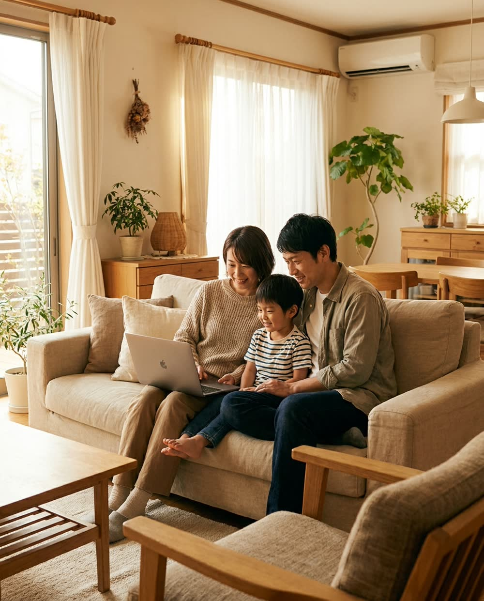

お一人でも、ご家族でも。
2,000人以上講師がこれまでにお金の話を届けてきた人数（延べ）。
初心者向けの勉強会です。
初心者向けの勉強会です。
こんな気持ち、ありませんか
ひとつでも当てはまれば、
ひとつでも当てはまれば、
この会はあなたのための
1時間です。
- 習い事や進学で「うちは無理」と言いたくない
- 学費の時期と、自分たちの老後が同時に来る
- 新NISA、口座は作ったけれど、そのまま
- 年金だけで、毎月いくら足りないのか分からない
- 貯金はあるのに、物価が上がって減っている気がする
- 退職金や貯金の置き場所を、誰にも相談できない
どれも、1時間で「自分の数字」に変わります。
1時間後に、手元に残るもの
「うちは、
「うちは、
いくら足りない？」が
数字になって残ります。
家計の話は、平均ではなく自分の数字で見たときに初めて動けます。
この勉強会では、あなたの家の数字を一緒に出すところから始めます。
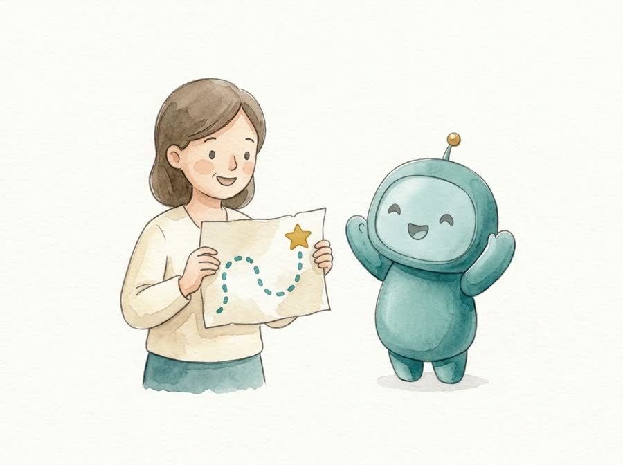
1ゴールと現在地の差
教育費、住宅ローン（金利が上がったら）、老後の生活費。
「何年後に、いくら必要か」を自分の家の数字で書き出します。
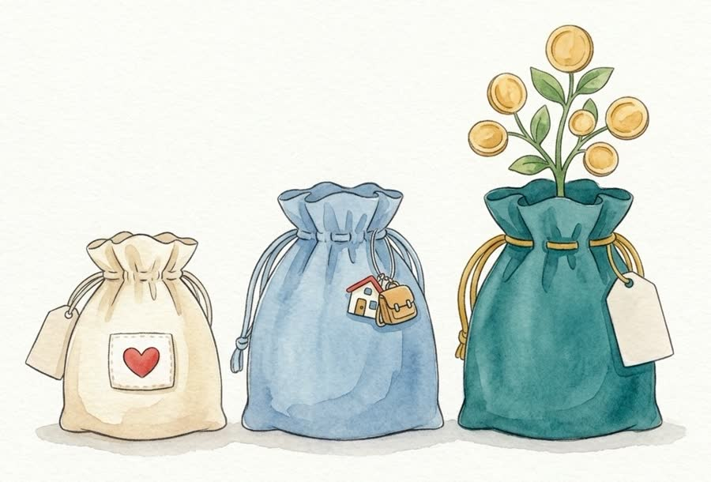
2お金を分ける3つの袋
もしものお金、近い将来のお金、長く育てるお金。
この順番を知ると、何から始めればいいかが決まります。
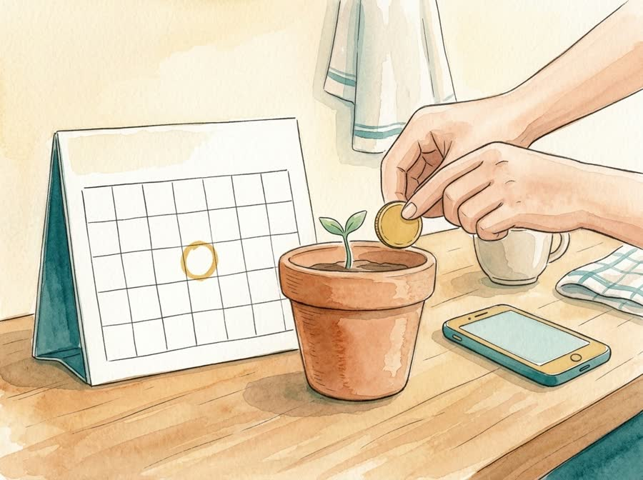
3今月からの、小さな一歩
新NISAのきほんと、あわてない順番。
月3,000円からでも続けられる形を、一緒に考えます。
いま貯金ゼロでも、赤字でも、そのままの数字で。
決めるのは帰ってからで大丈夫。
LINEで日程を受け取る無料・顔出し不要・1回1〜3名
LINEが開いたら「追加」を押してください。
なぜ、まだ動けていないのか
お金のこと、
物価は上がる。でも貯金の数字は、そのまま。
お金のこと、
誰にも習って
こなかったから。
学校でも、会社でも、家でも。
お金の増やし方を順番どおりに教わる機会は、ほとんどありません。
だから「なんとなく貯金」のまま、気づけば何年も経っている。
これは、あなたのせいではありません。
いま赤字の方も、自営業で退職金がない方も、そのままの数字で大丈夫です。
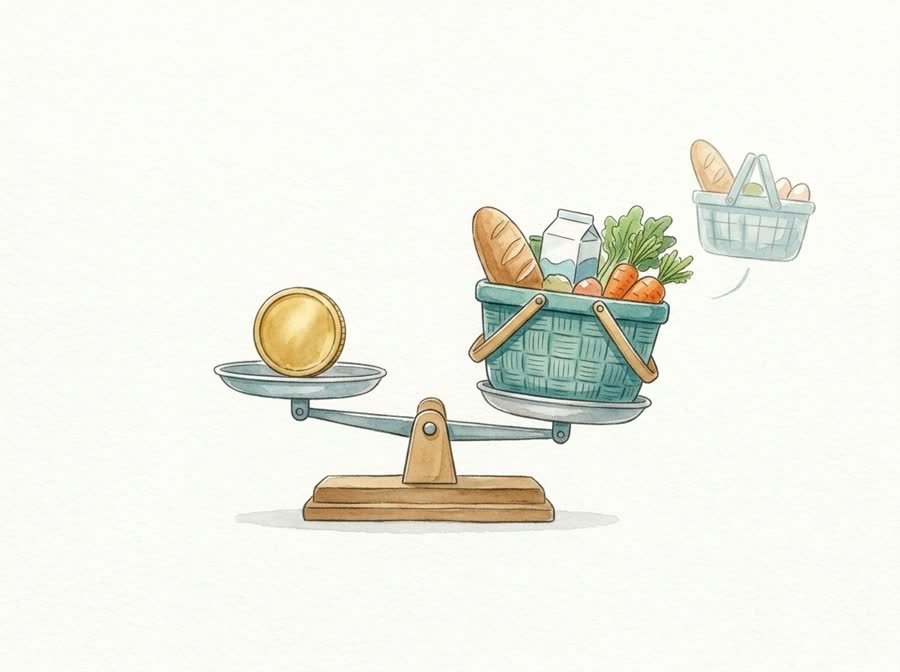
いまの家計のまま進むと
いつ、いくら
子育てが終わった方
山の時期と高さは家ごとに違います。会ではあなたの家の山を描きます。
※試算は一般的な前提による目安です。
いつ、いくら
足りなくなるか。
先に見ておくと慌てません。
足りない時期と金額が分かれば、今から埋め方を選べます。
先に見た人ほど、落ち着いて動けます。
子育て中の方
- 進学や習い事の支出の山は、いつ来るか
- 学費の時期に老後の分も残す方法
- 親の介護や通院にかかるお金
- 子どもに自分の言葉でお金の話を
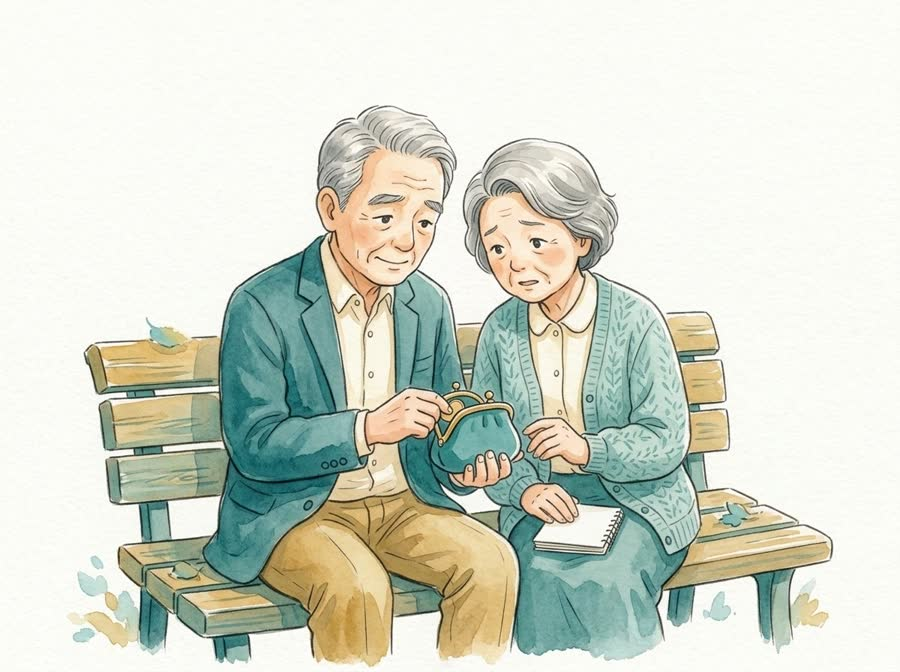
子育てが終わった方
年金をもらっている方
- 年金だけで毎月いくら足りないか
- 年金をいつから受け取るか
- 退職金や貯金の置き場所
- 退職金がない方の老後の作り方
- 物価が上がっても困らない備え
※試算は一般的な前提による目安です。
どちらの方も、同じ会で一緒に進めます。お一人の方も、自営業の方も、ご家族での参加も歓迎です。
勉強会はこんな会です
あなたの状況を
あなたの状況を
聞きながら進める、
1回1〜3名の会です。
動画を10本見るより、1回参加するほうが早い。
その場で質問して、自分の場合の答えを持ち帰れます。
- ZoomスマホでOK
- 約1時間家事の合間に
- 顔出し不要聞くだけでもOK
- 1回1〜3名2週間先まで選べます
当日の流れ
- 日程をLINEで選ぶ10時・12時・14時・18時・20時の枠から、合う日を押すだけ。
- 前日にLINEで入口が届く5分前にリンクを押せば入れます。イヤホンがあれば十分です。
- 当日はZoomで約1時間あなたの状況を聞きながら、数字を一緒に出します。話したくなったら声で、そうでなければチャットで大丈夫。
1時間で、話すこと
- いくら貯めれば安心？を、自分の家の数字で出す
- お金を分ける3つの袋（もしも・近い将来・長く育てる）
- まずは何から始めるのが正解か
- 新NISAのきほん（口座を作っただけの方も、ここから）
- 物価が上がる時代の、貯金の置き方
- お金が残らない家の、よくある習慣
- SNSの「簡単に増える」に近づかない見分け方
全部は1時間に入りません。あなたの状況に合わせて、必要なところから。
参加は無料です
会の中は、お金の勉強だけ。商品はすすめません。
続きを聞きたくなった方だけ、LINEで「相談」と送ってください。
こちらから急かしません。
LINEで日程を受け取る無料・顔出し不要・1回1〜3名
LINEが開いたら「追加」を押してください。
参加した方の声
「自分にもできるかも」
会場での勉強会。オンラインは同じ内容を少人数で。 子ども向けのお金の授業も行っています。
「自分にもできるかも」
から、始まっています。
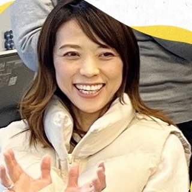
50代・サービス業大和田 恵さん
お金に対する不安が和らぎ、生き方まで変わりました
「資産運用をやってみたいけど、何から始めればいいか分からない」。
周りにも相談できる人がいなくて、ずっと不安を抱えていました。
Voicyで森川さんの話を聞いたとき、"難しそう"だった運用がグッと身近に。
今では不安が和らぎ、年齢を言い訳にせずチャレンジできる自分に出会えました。
ただの勉強会ではなく、人生そのものに前向きになれる場所です。
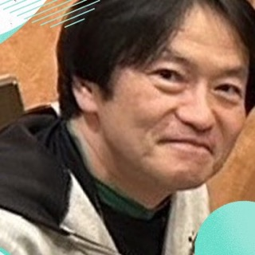
60代・会社員住田 英二さん
森川さんの話なら信用できる。だから始められました
ずっと興味はありましたが、何を信じていいか分からず一歩を踏み出せませんでした。
2年間Voicyで森川さんの話を聞き続け、「この人の話なら大丈夫」と感じて参加を決めました。
困った時はすぐに相談できる環境があるので、安心して長く続けていけます。
50代・個人事業主尾道 幸子さん
マイペースでも、資産は少しずつ増やせると実感できました
はじめは「危ないものでしょ」と思っていました。
でも森川さんの説明はとても丁寧で、初めて「自分にもできるかも」と思えたんです。
参加者のペースに合わせて見守ってくれる姿勢が、本当にありがたい。
「お金の学びって楽しい」と思えたのは、この勉強会が初めてでした。
※参加者ご本人の感想です。感じ方には個人差があります。
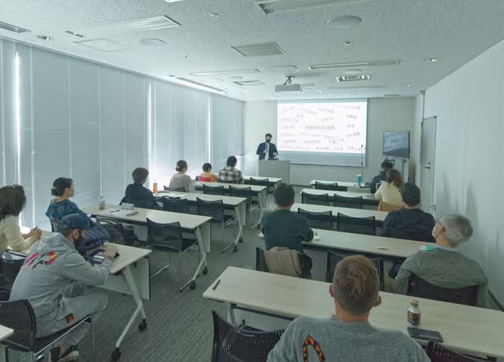
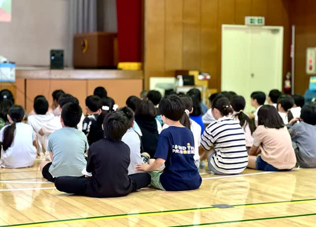
講師
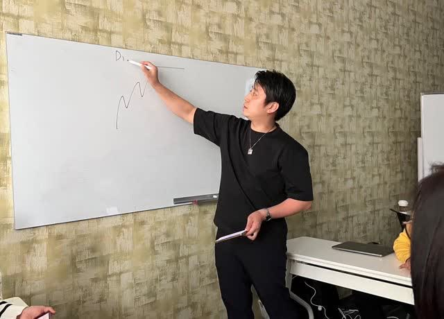
森川 満章fulfull株式会社 代表
- 1986年生まれ、岩手出身、横浜在住。3児の父
- 大手金融会社の認定講師、商工会議所のビジネスアドバイザー
- 音声アプリVoicy「ふるふるラジオ」を毎朝配信
- Voicy 「ふるふるラジオ」毎朝配信
- YouTube 「ふるふるチャンネル」
- Instagram @morikawa_fulfull
よくある質問
参加の前に、気になること。
声を出さないとダメですか？
聞くだけでも大丈夫です。
チャットで答えてもらえれば進められます。
話したくなったら、声でどうぞ。
チャットで答えてもらえれば進められます。
話したくなったら、声でどうぞ。
何も分からなくても大丈夫？
むしろ、その方のための会です。
専門用語は使わず、あなたの家の数字から始めます。
専門用語は使わず、あなたの家の数字から始めます。
終わったあと、勧誘はある？
ありません。会の中で商品をすすめることもありません。
続きを聞きたくなった方だけ、LINEで「相談」と送ってください。それ以外の方に、こちらから急かすことはありません。
続きを聞きたくなった方だけ、LINEで「相談」と送ってください。それ以外の方に、こちらから急かすことはありません。
ほかの人に数字は見えますか？
見えません。数字のやり取りは講師とだけ行います。
表示名はニックネームでOK。
表示名はニックネームでOK。
投資しなくてもいいですか？
いいです。貯金の置き方を整えるだけでも、1時間の価値があります。
投資は、増えることも減ることもあります。
するかどうかは、自分の数字を見てから決めれば十分です。
投資は、増えることも減ることもあります。
するかどうかは、自分の数字を見てから決めれば十分です。
家族と一緒に参加できますか？
できます。お一人でも、ご夫婦でも、お子さんが横にいても大丈夫です。
パートや専業主婦の方も、そのままで大丈夫です。
パートや専業主婦の方も、そのままで大丈夫です。
LINEを追加すると何が届く？
日程の一覧と、前日の入口の案内です。
それ以外の通知は多くありません。いつでも解除できます。
それ以外の通知は多くありません。いつでも解除できます。
日程が合わないときは？
LINEで2週間先までの枠から選べます。
希望の日を送っていただければ、その日が開いたときにいちばんにお知らせします。
希望の日を送っていただければ、その日が開いたときにいちばんにお知らせします。

まずは、うちの数字を
見てみませんか。
1時間で、「いくら足りない？」が数字になります。
そこから先は、あなたのペースで。
LINEで日程を受け取る無料・顔出し不要・1回1〜3名
LINEが開いたら「追加」を押してください。
日程の一覧が届きます。